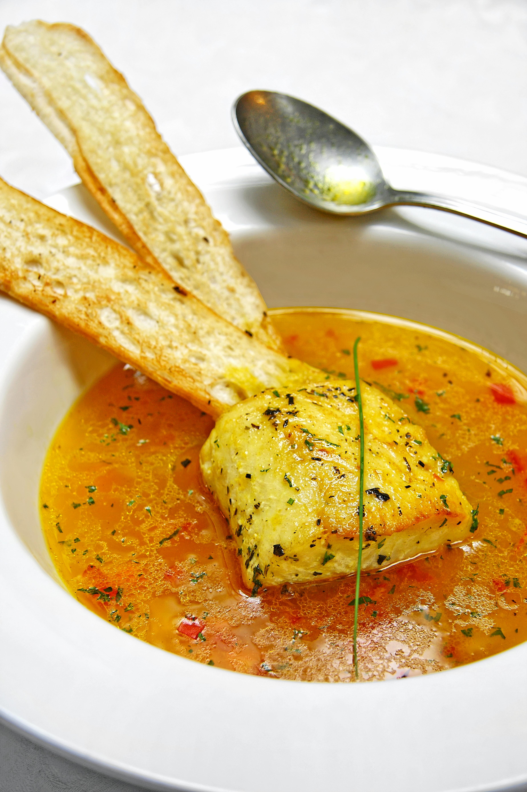
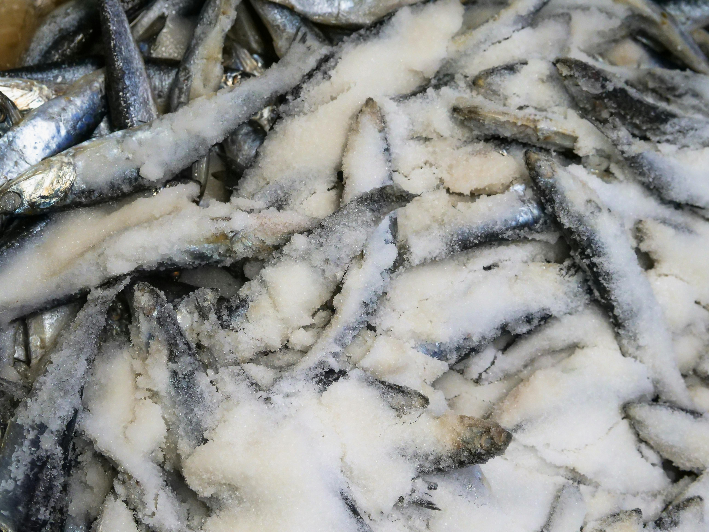
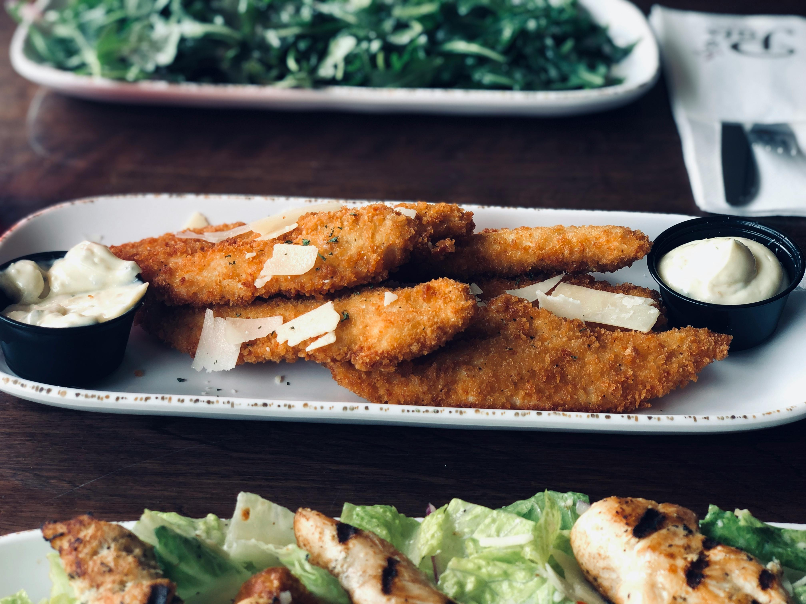

Receitas de Peixes Fáceis e Rápidas

Salmão
Uma receita simples e saudável de salmão grelhado com limão e ervas frescas.

Moqueca
Uma deliciosa moqueca de peixe com leite de coco e pimentões.

Bacalhau
Um clássico bacalhau assado com batatas, pimentões e azeitonas.

Tilápia
Tilápia empanada crocante com farinha de rosca e ervas.

Camarão
Camarões salteados no alho e óleo com toque de limão e salsa.